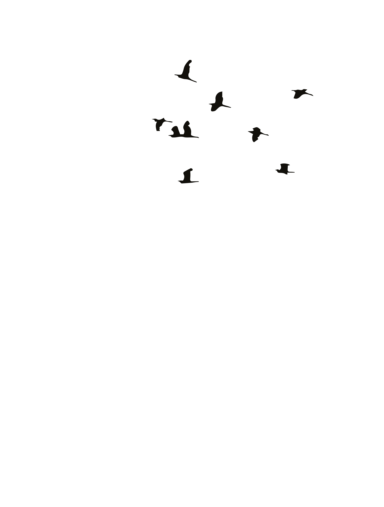
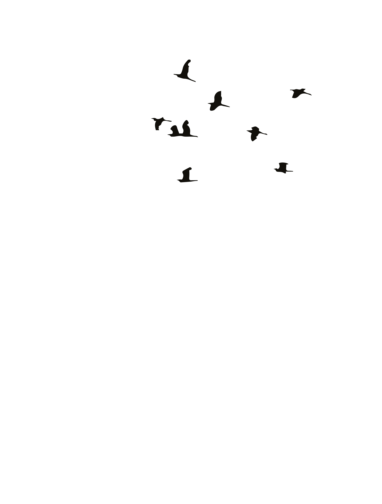
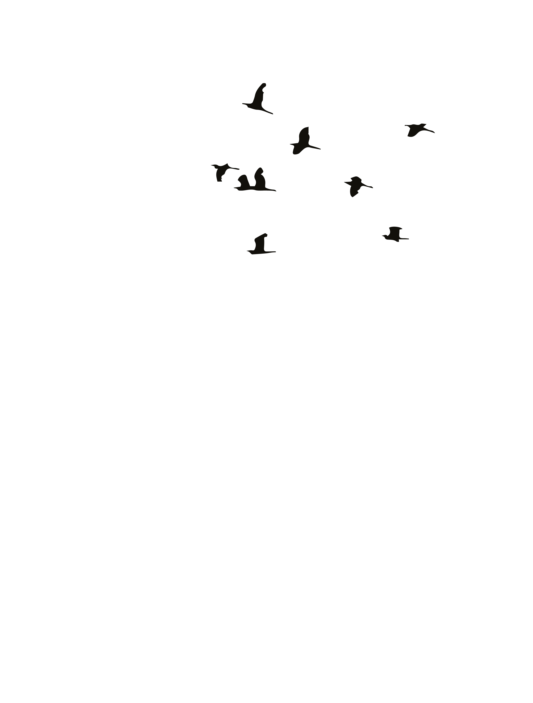
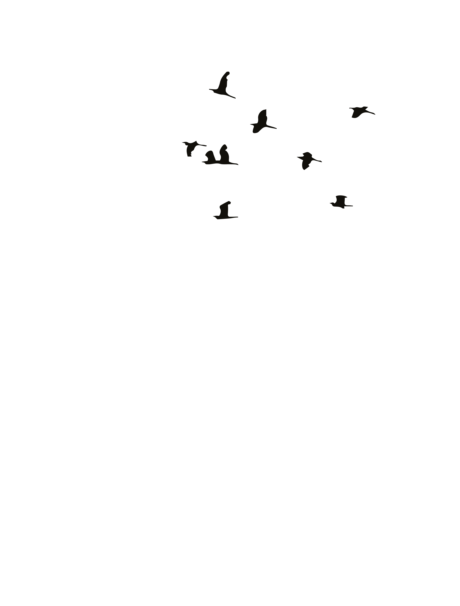

<p>
On-Scroll-Interaktion bezieht sich auf jedes Benutzeroberflächenelement oder jede Aktion, die ausgelöst wird, während der Benutzer durch eine Webseite oder eine App-Oberfläche scrollt. Diese Art der Interaktion kann verschiedene Effekte umfassen, wie Animationen, Pop-ups oder Änderungen des Layouts oder Inhalts der Seite.
On-Scroll-Interaktionen können dazu verwendet werden, ansprechende und dynamische Benutzererlebnisse zu schaffen und können besonders effektiv sein, um die Aufmerksamkeit des Benutzers zu erfassen und ihn zur Aktion zu bewegen. Sie können auch verwendet werden, um dem Benutzer zusätzliche Informationen oder Kontext zu geben, während er durch den Inhalt navigiert.
Einige Beispiele für On-Scroll-Interaktionen sind Parallax-Scrolling, bei dem Hintergrundelemente mit einer anderen Geschwindigkeit als der Vordergrund bewegt werden, oder Scroll-triggered-Animationen, bei denen Elemente erscheinen oder sich ändern, wenn der Benutzer die Seite nach unten scrollt.
</p>